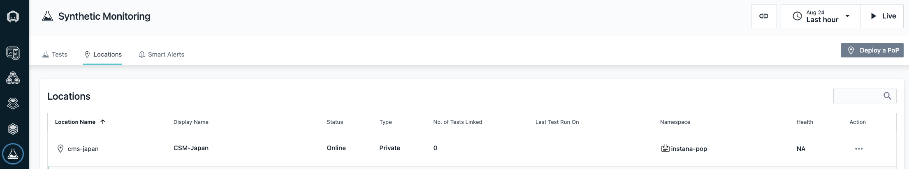
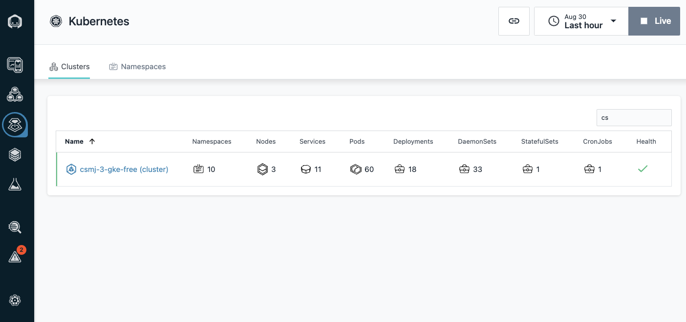

Synthetic Monitoring
外形監視を諸々試していくメモ。
PoPサーバーの準備
外形監視は、InstanaBackend → PoPサーバー → 監視したいエンドポイントという流れで実施される。そのためPoPサーバーはInstanaとは別で用意する必要あり。
Kubernetesを準備する(今回はGKE)
悲しいことに、IBM Cloudの無償クラスターは2023年7月末で終了してしまったそうです。。。。
自分のお金は仕事では使いたくないので、無償で使えるKubernetes環境を用意します。多分minikubeでも大丈夫ですが、GKEを用意していきます。
以下、手順
1. gcpトライアルアカウントを用意
2. gcpのcliをインストール
3. CLIでGKEを構築していく
1. gcpトライアルアカウントを用意
これは各自実施してください。3ヶ月間、300ドル使いたい放題のため無料で遊べます。
2. gcpのcliをインストール
このあと必要になるやつも一緒にいれておく。
CLIでGKEをインストールする
最初にProject_IDとRegionを環境変数にしておく。
以下コマンドを実行するとGKEが作成される。container clusters create-auto10分弱かかった。表示されたテキストにしたがい、gkeの認証をゲットする。
get nodeで接続できたか確認する。
> kubectl get node
NAME STATUS ROLES AGE VERSION
gk3-hello-cluster-default-pool-b8522c1c-dhfg Ready <none> 7m54s v1.27.3-gke.100
PoPをHelmインストール
Info
この手順はあてでAnsible Playbookにする。
インストールするnamespaceを作成する。
※ helmでnamespace作成もできる。helm install synthetic-pop \
--repo "https://agents.instana.io/helm" \
--namespace instana-pop \
--set downloadKey="uBp4GXpZQpKrHxMXNcvInQ" \
--set controller.location="CSM-Japan;CSM-Japan;Japan;Chiba;0;0;佐川のテスト用" \
--set controller.clusterName="csm-sagawa-pop" \
--set controller.instanaKey="uBp4GXpZQpKrHxMXNcvInQ" \
--set controller.instanaSyntheticEndpoint="https://synthetics-orange-saas.instana.io" \
--set redis.tls.enabled=false \
--set redis.password="ohgo0805" \
synthetic-pop
NAME: synthetic-pop
LAST DEPLOYED: Thu Aug 24 17:11:51 2023
NAMESPACE: instana-pop
STATUS: deployed
REVISION: 1
TEST SUITE: None
NOTES:
CHART NAME: synthetic-pop
CHART VERSION: 1.0.15
APP VERSION: 1.256.0
いちおうkubectl get poする
❯ kubectl get pod -n instana-pop
NAME READY STATUS RESTARTS AGE
synthetic-pop-browserscript-playback-engine-744fbdc6b6-d924d 1/1 Running 0 111s
synthetic-pop-controller-74ccbc7c-vx2gz 0/1 Running 0 111s
synthetic-pop-http-playback-engine-9756dcd5d-2qldk 1/1 Running 0 111s
synthetic-pop-javascript-playback-engine-5bdf57bdd6-tckkl 1/1 Running 0 111s
synthetic-pop-redis-57c9bbd7db-qk9pj

GKEにAgentをInstallする
外形監視として必要なわけではないが、せっかくなのでAgentもいれておく。Helmでcluster名とzoneを任意に設定。
helm install instana-agent \
--repo https://agents.instana.io/helm \
--namespace instana-agent \
--create-namespace \
--set agent.key=uBp4GXpZQpKrHxMXNcvInQ \
--set agent.downloadKey=uBp4GXpZQpKrHxMXNcvInQ \
--set agent.endpointHost=ingress-orange-saas.instana.io \
--set agent.endpointPort=443 \
--set cluster.name='csmj-3-gke-free' \
--set zone.name='csmj-3' \
instana-agent
すぐにsandboxから確認できた。 
エラー。MasterNodeに何かしようとしたから？daemonsetはデプロイされてた。何か不具合がおこるかもしれないがあとで確認する
W0830 01:57:18.364062 70659 warnings.go:70] autopilot-default-resources-mutator:Autopilot updated DaemonSet instana-agent/instana-agent: adjusted resources to meet requirements for containers [instana-agent] (see http://g.co/gke/autopilot-resources)
W0830 01:57:18.513994 70659 warnings.go:70] autopilot-default-resources-mutator:Autopilot updated Deployment instana-agent/k8sensor: adjusted resources to meet requirements for containers [instana-agent] (see http://g.co/gke/autopilot-resources)
Error: INSTALLATION FAILED: 1 error occurred:
* admission webhook "warden-validating.common-webhooks.networking.gke.io" denied the request: GKE Warden rejected the request because it violates one or more constraints.
Violations details: {"[denied by autogke-disallow-hostnamespaces]":["enabling hostNetwork is not allowed in Autopilot.","enabling hostPID is not allowed in Autopilot."],"[denied by autogke-disallow-privilege]":["container instana-agent is privileged; not allowed in Autopilot"],"[denied by autogke-no-host-port]":["container instana-agent specifies host ports [42699], which are disallowed in Autopilot."],"[denied by autogke-no-write-mode-hostpath]":["hostPath volume dev in container instana-agent is accessed in write mode; disallowed in Autopilot.","hostPath volume run in container instana-agent is accessed in write mode; disallowed in Autopilot.","hostPath volume var-run in container instana-agent is accessed in write mode; disallowed in Autopilot.","hostPath volume var-run-kubo in container instana-agent is accessed in write mode; disallowed in Autopilot.","hostPath volume var-run-containerd in container instana-agent is accessed in write mode; disallowed in Autopilot.","hostPath volume var-containerd-config in container instana-agent is accessed in write mode; disallowed in Autopilot.","hostPath volume sys in container instana-agent is accessed in write mode; disallowed in Autopilot.","hostPath volume var-log in container instana-agent is accessed in write mode; disallowed in Autopilot.","hostPath volume var-lib in container instana-agent is accessed in write mode; disallowed in Autopilot.","hostPath volume var-data in container instana-agent is accessed in write mode; disallowed in Autopilot.","hostPath volume machine-id in container instana-agent is accessed in write mode; disallowed in Autopilot."]}
Requested by user: 'chailatte915@gmail.com', groups: 'system:authenticated'.
Try Browser Simple
- When to use?
シンプルテストは、HTTPエラー確認のため1つのウェブページをテストしたいときに使う。 - Tips
- 作りたいテストの種類を選ぶ
- webページのurlを入力し、PoPのロケーションを選ぶ
- テスト頻度を選ぶ
これは簡単。webページにアクセスしたときに200で返ってくるかどうかを見るだけ。。表示が崩れてないか？一部のデータが取得できていなかったりしないか？をテストしたいときは、スクリプトテストを使う。
Try Script Test
Node.jsベースのスクリプトやSeleniumベースのAPIを使用して、Instanaでブラウザテストができる。予め定義されたグローバル変数やInstanaブラウザテスティングAPIを使用することで、ウェブブラウザ内でのユーザーの操作を模倣したブラウザスクリプトテストを作成し、実行できる。
「これテストコード書けないと何もできないな...。」と思ったそこのあなた！！instanaはコードサンプルをたーくさん用意しています！
まずはサンプルの中にあった、IBMのホームページに対してテストを実行するコードを読み解いていきます
const { assert } = require("chai");
let click = async (message, by, timeout = 60000) => {
console.log(`Click on ${message} >> ${by} << `);
try {
const element = await $browser.waitForAndFindElement(by, timeout);
const out = $browser.actions().move({ origin: element }).press().release().perform();
return out;
} catch (err) {
console.error(`\ncatch(click): ${err.message}`);
await $browser.takeScreenshot();
throw err;
}
};
let scrollToViewAndClick = async (message, by, timeout = 60000) => {
try {
const element = await $browser.waitForAndFindElement(by, timeout);
console.log("Scroll down to ", message)
await $browser.executeScript("arguments[0].scrollIntoView()", element);
console.log("Click ", message);
await $browser.executeScript("arguments[0].click();", element);
} catch (err) {
console.error(`\ncatch(scrollToViewAndClick): ${err.message}`);
await $browser.takeScreenshot();
throw err;
}
}
(async function () {
await $browser.get("https://www.ibm.com/us-en");
console.log("Step1: Accept all cookies");
const cookies = await $browser.waitForAndFindElement(
$driver.By.id(`truste-consent-button`),
30000
);
await cookies.click();
console.log("Step2: Scroll down to developer education link and navigate to it");
await scrollToViewAndClick('developer link', $driver.By.linkText(`Developer education`), 30000);
console.log("Assert page title");
await $browser.waitForAndFindElement($driver.By.css(`h1 > strong`), 30000);
assert.equal("Home - IBM Developer", await $browser.getTitle());
console.log("Step3: I want to learn Node.js");
await click("programming tab", $driver.By.css(`#tab-link-3-default`), 10000);
await scrollToViewAndClick('Get started with Node.js', $driver.By.css(`#tab-panel-3-default > div:nth-child(1) > div:nth-child(2) > div:nth-child(1) > a:nth-child(1) > div:nth-child(2)`), 10000);
console.log("Step4: Move to Node.js summary");
await scrollToViewAndClick('Summary', $driver.By.linkText(`Summary`), 10000)
})();
ee the following playback engines that support different Synthetic test types:
HTTP playback engine: Used to run the API Simple test (type: HTTPAction). JavaScript playback engine: Used to run the API Script test (type: HTTPScript). BrowserScript playback engine: Used to run the BrowserScript test (type: BrowserScript), Webpage Simple test (type: WebpageAction), and WebpageScript test (type: WebpageScript). Deployment Option Synthetic PoP can be deployed only by the Helm charts.
The official Helm repository URL is https://agents.instana.io/helm, and the chart name is synthetic-pop. The Helm chart Git repository URL is https://github.com/instana/synthetic-pop-charts. Prerequisites Synthetic PoP needs to be deployed in a Kubernetes cluster. Use the helm chart to deploy Synthetic PoP, and ensure that Kubernetes and helm are installed in your environment.
Set up a Kubernetes cluster where the PoP will be installed. The minimum supported version for the kubernetes distribution is 1.10. For more information, see Set up Kubernetes. Install Helm, and Helm V3 is recommended. For more information, see Installing Helm. The minimum physical requirement to install the Synthetic PoP in the Kubernetes cluster is 3.1 core CPU and 2.7 GB memory.
Install Helm Install Use the helm install command to install a new Synthetic PoP, and pass the following values. You are suggested to install the PoP in a separate namespace.
downloadKey: The download agent key for pulling image from containers.instana.io Docker registry. controller.location: The format is label; displayLabel; country; city; latitude; longitude; description. This label acts as the PoP identifier and can only contain letter, number, hyphen and underscore. controller.instanaKey: The Instana agent key, which is used for connecting to Instana backend. controller.instanaSyntheticEndpoint: The ingress endpoint of synthetic acceptor in Instana backend. controller.clusterName: Optionally. It needs to be set with the name of the Kubernetes cluster that is to be displayed in the Instana UI when Instana agent is installed to monitor this PoP. redis.password: The authentication password to redis server. Specify a password with length at least 10. redis.tls.enabled: Define if enabling Redis TLS or not (default false). If the value is true, the communication with Redis will be encrypted with TLS. redis.tls.secretName: If the value of the redis.tls.enabled field is true, you need to specify a secret name for Redis TLS key/cert files. Sign in to Instana UI, click Synthetic Monitoring, and then click Deploy a PoP. Copy the values of downloadKey, controller.instanaKey and controller.instanaSyntheticEndpoint.
To configure the installation, specify the values in the command line by using the --set flag, or provide a yaml file with your values by using the -f flag.
In the following example, a PoP is deployed, and Redis uses password for authentication.
helm install synthetic-pop \ --repo https://agents.instana.io/helm \ --namespace syn \ --create-namespace \ --set downloadKey="yourdownloadkey" \ --set controller.location="MyPoP;My PoP;China;Beijing;39.54;116.23;This is a testing Synthetic Point of Presence" \ --set controller.instanaKey="instanaAgentkey" \ --set controller.instanaSyntheticEndpoint="https://synthetics-green-saas.instana.io" \ --set redis.tls.enabled=false \ --set redis.password="a1fc5d01bcbb" \ synthetic-pop
You can also provide your values.yaml to deploy a PoP, below examples shows how to get the values.yaml template and then pass the modified yaml file to deploy a PoP.
helm repo add synthetic-pop-repo https://agents.instana.io/helm helm repo update helm pull synthetic-pop-repo/synthetic-pop tar xzvf synthetic-pop-*.tgz
Modify the synthetic-pop/values.yaml file
Run helm install to pass the modified values.yaml
helm install synthetic-pop \ --repo https://agents.instana.io/helm \ --namespace syn \ --create-namespace \ -f /path/to/values.yaml \ synthetic-pop
After PoP is installed, make sure that each pod is in Running and Ready status.
kubectl get pod -n syn
Sign in to Instana UI, click Synthetic _Monitoring > Locations, and then you can see your location is showed up in the location list. If not, go to the Troubleshooting section to check the log files.
Security Enhancement The following configurations are recommended for security enhancement in production environment.
TLS encryption PoP controller and different playback engines communicate through Redis server, and PoP controller provides an endpoint for health check. You can configure TLS to encrypt the communication through Redis TLS and encrypt the endpoint of PoP controller through HTTPS.
To configure TLS, you need to have your X.509 certificate-key pair (tls.crt, tls.key) and Certificate Authority (CA) root certificate file (ca.crt). If you do not have your key and certificate files, you can also use the openssl command to generate new ones. See the following examples:
openssl genrsa -out tls.key 4096 openssl req -x509 -new -nodes -sha256 -key tls.key -days 3650 -subj '/O=Instana/CN=Certificate Authority' -out ca.crt openssl req -new -sha256 -key tls.key -subj '/O=Instana/CN=Server' | openssl x509 -req -sha256 -CA ca.crt -CAkey tls.key -CAserial ca.txt -CAcreateserial -days 3650 -out tls.crt
After key/cert files are provided, use the kubectl command to create a secret.
Create a new TLS secret named pop-tls-secret with the given key/cert files
kubectl create secret generic pop-tls-secret -n syn \ --type='kubernetes.io/tls' \ --from-file=ca.crt=path/to/ca.crt \ --from-file=tls.crt=path/to/tls.crt \ --from-file=tls.key=path/to/tls.key
To deploy a PoP to support TLS, run the following command:
helm install synthetic-pop \ --repo https://agents.instana.io/helm \ --namespace syn \ --create-namespace \ --set downloadKey="yourdownloadkey" \ --set controller.location="MyPoP;My PoP;China;Beijing;39.54;116.23;This is a testing Synthetic Point of Presence" \ --set controller.instanaKey="instanaAgentkey" \ --set controller.instanaSyntheticEndpoint="https://synthetics-green-saas.instana.io" \ --set redis.tls.enabled=true \ --set redis.tls.secretName="pop-tls-secret" \ synthetic-pop
Secure Computing Mode You can use secure computing mode (or seccomp) to sandbox the privileges of a process, which restricts the calls from user space into the kernel. Use the following parameter to enable RuntimeDefault as default seccomp profile for all containers.
Note: The default seccomp profile works only for Kubernetes version 1.19 or later or OCP (OpenShift Container Platform) version 4.11 or later. If seccompDefault is not set to true for OCP 4.11 or later, you can see some warning messages when you run the helm installation.
helm install synthetic-pop \ --repo https://agents.instana.io/helm \ --namespace syn \ ... --set seccompDefault=true \ synthetic-pop
Network Policy By using the network policy, you can specify how a pod is allowed to communicate with the network. To block access from PoP to specific IPs or IP ranges, you can enable and customize the playbackEngineNetworkPolicy parameter. Typically, you can collect the following IP addresses:
Cloud provider metadata service IP address: It is 169.254.169.254 for AWS Metadata API, Google Cloud Metadata API, Azure Metadata API. Kubernetes API server IP address: Use the kubectl command to collect Kubernetes API server IP address. See the following example for microk8s or minikube Kubernetes cluster:
Use the following command to print apiserver endpoint
For example, if the following command prints "Endpoints: 10.128.0.127:16443", you need to block the IP address 10.128.0.127
kubectl describe service kubernetes
Then, modify the file values.yaml in helm charts as follows to enable Egress rules to block the IP addresses that you collect.
playbackEngineNetworkPolicy: # Change the value to true to enable the network policy enabled: true egress: - to: - ipBlock: # Allow all IP address v4 cidr: 0.0.0.0/0 except: # Block Kubernetes API server IP address - 10.128.0.127/32 # Block cloud provider metadata service IP address - 169.254.169.254/32
See the following example to pass network policy by using --set:
--set-json only be supported since Helm V3.11
helm install synthetic-pop \ --repo https://agents.instana.io/helm \ --namespace syn \ ... --set playbackEngineNetworkPolicy.enabled=true \ --set-json 'playbackEngineNetworkPolicy.egress=[{"to":[{"ipBlock":{"cidr":"0.0.0.0/0","except":["10.128.0.127/32","169.254.169.254/32"]}}]}]' \ synthetic-pop
Migration Scenario To support the backend migration scenario, you can specify multiple synthetic acceptor endpoints and Instana agent keys with semicolon. Instana agent keys and synthetic acceptor endpoints are one-to-one correspondence. During the migration period, Synthetic PoP can send data to both old and new backend to avoid downtime.
See the following example:
helm install synthetic-pop \ --repo https://agents.instana.io/helm \ --namespace syn \ --set controller.instanaKey="instanaAgentkey;anotherInstanaAgentKey" \ --set controller.instanaSyntheticEndpoint="https://synthetics-green-saas.instana.io;https://synthetics-green-saas.instana.host" \ ...
Upgrade Use the helm upgrade command to update a Synthetic PoP. See the following example. You can change the parameters as needed.
helm upgrade synthetic-pop \ --repo https://agents.instana.io/helm \ --namespace syn \ --set downloadKey="yourdownloadkey" \ --set controller.location="MyPoP;My PoP;China;Beijing;39.54;116.23;This is a testing Synthetic Point of Presence" \ --set controller.instanaKey="instanaAgentkey" \ --set controller.instanaSyntheticEndpoint="https://synthetics-green-saas.instana.io" \ --set redis.tls.enabled=false \ --set redis.password="a1fc5d01bcbb" \ synthetic-pop
Note:
The label value in the location parameter is an identifier of the PoP, and not allowed to change. You are recommended to change the displayLabel value as you want. The redis password is not allowed to update. If you really need to change it, uninstall it and then reinstall it with updated redis password. Uninstall Use the helm uninstall command to uninstall a Synthetic PoP.
helm uninstall synthetic-pop -n syn
Note: After the PoP is uninstalled, the PoP's location is still shown in the Instana UI with offline status. You can reinstall the PoP with the same location to make the location online again, or delete the location on UI if you do not use it anymore.
More Configuration Options Playback engine enablement By default, three playback engines are enabled and deployed. You can disable some of them based on your requirement. For example, if you do not need Browser tests, you can disable the BrowserScript playback engine by passing the following parameter to reduce the required CPU and memory resources for your Synthetic PoP.
--set browserscript.enabled=false
Scalability Currently, only playback engines support horizontal scalability, and PoP Controller and Redis don't support horizontal scalability yet. The PoP workload is mainly on the playback engine pods. So to support more workload on a certain type of test, just increase the replicas number in the values.yaml file.
The following example shows that the replicas of JavaScript playback engine are increased to 2 and replicas of BrowserScript playback engine are increased to 3.
--set javascript.replicas=2 --set browserscript.replicas=3
Capabilities The controller.capabilities property defines the playback capabilities for the Synthetic PoP, including the supported Synthetic test and web browser types.
CustomProperties The controller.customProperties property defines the customized tags or properties for this PoP. The property is a list of key:value pairs, separated by a semicolon, such as key1=value1;key2=value2.
Use an API such as $env.key1 to access the custom property or tag in an API or browser script.
Proxy You can configure a proxy server for synthetic PoP to connect the Instana backend server. The following options are supported.
proxy.popProxyProtocol: the protocol used by the proxy server. Set the value to http or socks. proxy.popProxyServer: the proxy server address in the ipaddress:port format. proxy.popProxyUserPass: the username and password to authenticate the proxy server. Enter the username and password in the username:password format. Note: To configure the proxy server for Synthetic PoP to connect to the services that are being monitored, you can use the $network API to set a proxy server in the API script.
Using external secrets If you don't want to use Helm chart to create new secrets for the keys controller.instanaKey, redis.password, proxy.popProxyUserPass, and downloadKey, you can use the existing secrets that you have created for the Synthetic PoP deployment by specifying the secret names as follows:
helm install synthetic-pop \ --repo https://agents.instana.io/helm \ --namespace syn \ --set downloadSecret="my-pull-secret" \ --set controller.instanaKeySecret="my-pop-secret" \ --set redis.passwordSecret="my-pop-secret" --set proxy.popProxyUserPassSecret="my-pop-secret" \ ...
For the keys controller.instanaKey, redis.password, and proxy.popProxyUserPass, you can use the same secret or different existing secrets. However, when you create the secret, you must use the specified key fields instana-key, redis-password, and proxy-user-pass as follows:
kubectl create secret generic my-pop-secret --namespace
Note: You need to replace
The secret for the downloadKey key must use the kubernetes.io/dockerconfigjson type. You can create the secret with the kubernetes.io/dockerconfigjson type as follows:
kubectl create secret docker-registry my-pull-secret --namespace
Notes:
Replace
Synthetic PoP sensor is automatically installed to monitor your PoP after the Instana host agent is installed. You can view the metrics in the Instana UI and get alerts if any health issue happens for your Synthetic PoP.
Performance Check the default hardware requirements for running a Synthetic PoP:
CPU (vCPU/Core): 3.1 up to 5.6 Memory: 2700 Mi up to 4100 Mi To check how many CPU and memory resources are allocated to each Pod of Synthetic PoP, check the requests and limits numbers in the resources sections for each Pod in the values.yaml file.
If you use the default CPU and memory resource allocation for a Synthetic PoP, then you can run 2000 API Simple tests, 20 API Scripts, and 5 BrowserScript tests in the performance benchmark testing with the following test configuration:
API simple test: Test frequency is 1 minute, and duration is around 200ms. API script test: Test frequency is 1 minute, the script contains 5 HTTP calls, and the total duration is around 800ms. BrowserScript test: Test frequency is 5 minutes, the script opens 2 web pages, and the total duration is around 20 seconds. To support more workload, scale up as follows:
Vertical scaling: Increase the requests and limits numbers of CPU and memory. Because JavaScript playback engine is CPU-intensive, you can increase the requests and limits numbers of CPU to support more API script tests. For example, if the requests and limits numbers of CPU are set to 800m and 1000m (0.8/1.0 Core), 40 API scripts can be supported with the previously described test configuration. Horizontal scaling: A simpler approach is provided to increase the replica number of different playback engines. For more information, see the Scalability section. Troubleshooting To check the Helm chart version, run the following command:
helm list -n
You can get the version number from the result such as synthetic-pop-
If you meet any issues, for example, the location that you specify can't be shown on Instana Synthetic UI, first check the PoP controller log by running the following command:
kubectl logs -n
To change the trace level of each component, you can pass the traceLevel values as follows to make an upgrade on your PoP:
--set controller.traceLevel="DEBUG" --set http.traceLevel="DEBUG" --set javascript.traceLevel="DEBUG" --set browserscript.traceLevel="DEBUG"
You can also dynamically change the trace level of PoP controller without restarting the pod by running the set_trace_level.sh command in the container.
enter synthetic-pop-controller container
kubectl exec -it -n
run set_trace_level.sh command to change trace level to DEBUG
./set_trace_level.sh DEBUG
A pdcollect.sh script is provided to collect and package log files of Synthetic PoP into a tar.gz file and send it to Instana support team for assistance. You can find the pdcollect.sh script in the Instana Helm charts directory or download it from the synthetic-pop-charts repository. Run the following command:
collect PoP logs from a namespace
./pdcollect.sh -n
Instana Agent on IKS
手順 1. namespaceを作成する
2. Instanaのダッシュボードから各種接続情報を確認する 1. Agent Deploy > Kubernetes > Helm 3. Helm Installでエージェントをデプロイするhelm install instana-agent --namespace instana-agent \
--repo https://agents.instana.io/helm \
--set agent.key='<your agent key - as described above>' \
--set agent.endpointHost='<your host agent endpoint - as described above>' \
--set cluster.name='<your-cluster-name>' \
--set zone.name='<your-cluster-name>' \
instana-agent